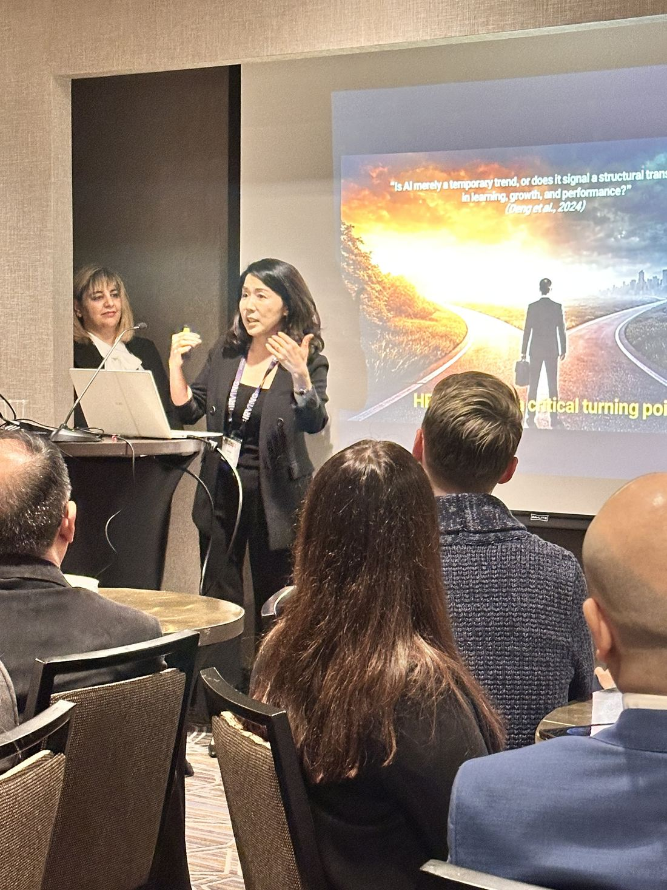
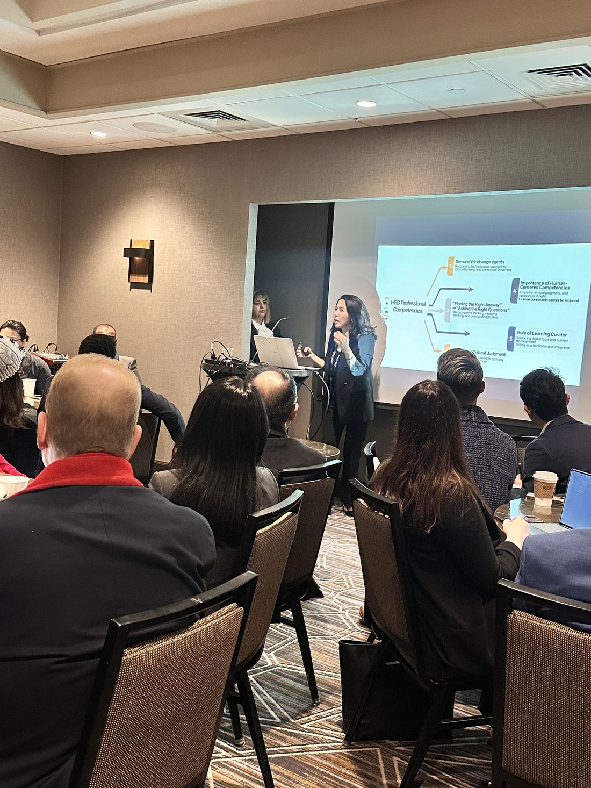
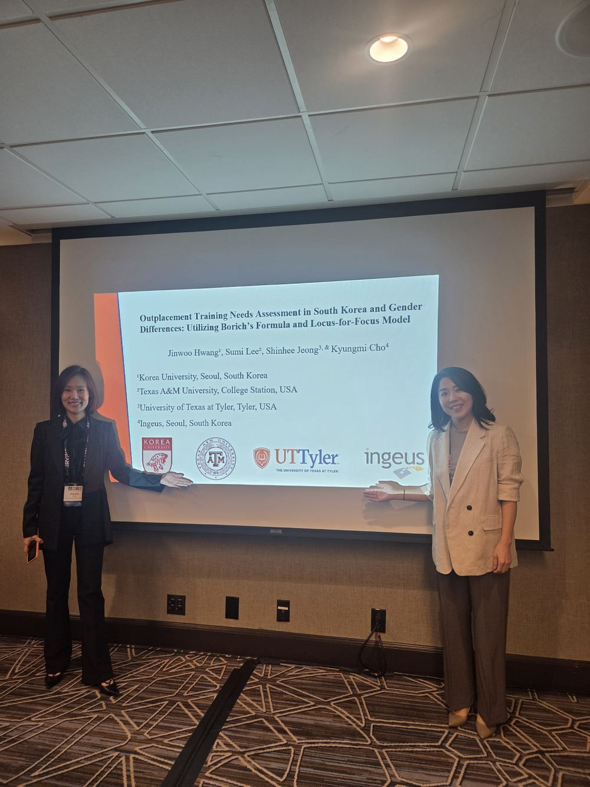
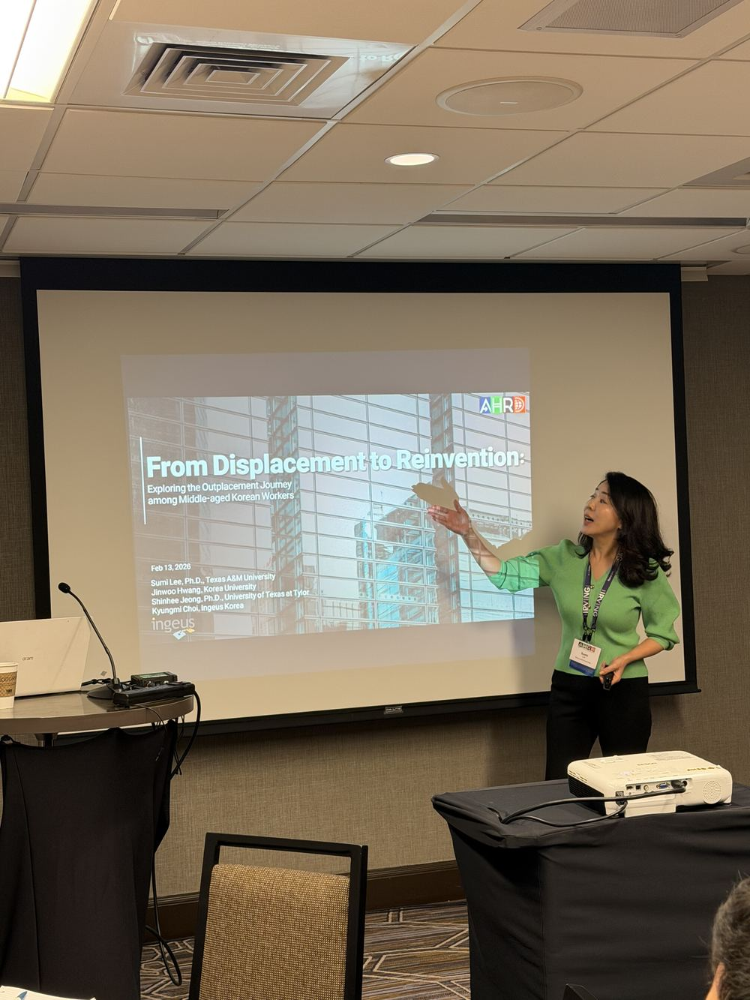

Clinical Assistant Professor, Texas A&M University
Bridging 25 years of corporate HRD practice with research on AI, learning culture, and workplace sustainability.
Department of Educational Administration and Human Resource Development
College of Education and Human Development
Texas A&M University
"My own career is, in a way, my first case study in transition."
Before her doctoral studies, Sumi Lee spent 25 years as an HRD practitioner at Kia Corporation in South Korea — serving as an HRM Manager and In-house Instructor, building onboarding systems, leadership competency models, and coaching programs. That experience shapes how she approaches research: not as theory built at a distance from practice, but as a bridge back to it.
In 2019, she left Kia to pursue a Ph.D. in Learning, Leadership, and Organization Development at the University of Georgia, examining how learning culture and knowledge sharing shape organizational performance and sustainability. She joined UGA as adjunct faculty in 2024, then became Clinical Assistant Professor at Texas A&M in 2025.
Today, her research sits at the intersection of AI, organizational learning, and sustainability — asking how HRD can keep pace with a changing world of work, and who gets included in that future. Her work has earned the AHRD Esworthy Malcolm S. Knowles Dissertation of the Year Award and the KAHRD Best Paper Award; she currently serves as Track Chair Editor for HRD Teaching, Student Engagement, and Faculty Development at AHRD. At heart, she remains a practitioner who also publishes.
Before her research career, Sumi led and contributed to HRD initiatives spanning leadership development, onboarding, training systems, and coaching at Kia Corporation, South Korea.
| Years | Project | Role |
|---|---|---|
| 2016–2019 | Global Citizenship Organization Development (OD) Project | Project Manager, Program Design and Development |
| 2016–2019 | Leadership Competency Modeling Project | Leadership Competency Analysis Workshop and Program Implementation |
| 2016–2019 | Lifecycle Retirement Learning System Project | Project Manager, Learning System Establishment and Program Planning |
| 2016–2017 | New-Employee Onboarding Program Project | Learning Program Planning and Teaching |
| 2016–2017 | HRD System Development Initiative Project | Analysis and Report Documentation |
| 2016–2017 | Structured On-the-Job Training (S-OJT) Project | S-OJT System Establishment |
| 2016–2017 | In-House Trainer Development Project | Project Manager, Trainer Guide Development and Training |
| 2015–2016 | Program Evaluation Project — Applying Phase 3 of Kirkpatrick's Model | Evaluation and Analysis |
| 2014–2015 | Online Learning Program Project (Sales Strategies Training) | Project Manager, Curriculum Design and Training Video Production (12 courses) |
| 2005–2015 | Customer Relationship Coaching Program | Co-Project Manager, Program Development and Teaching (22 courses) |
Sumi's research asks a consistent question across different contexts — how do organizations, and the people inside them, learn, adapt, and thrive through change?
AI in HRD Practice — how organizations adopt and institutionalize AI within HRD roles, competencies, and practice.
Sustainability — how intangible resources, learning culture, and knowledge sharing sustain long-term organizational performance.
Leadership — how authentic leadership sustains ethical, high-performing organizations, including as AI reshapes teams and decisions.
Underrepresented voices — how women, displaced workers, and marginalized groups — including North Korean women resettling in South Korea — navigate resistance, transition, and inclusion at work.
Student learning & career readiness — how HRD students learn, engage, and prepare for the workforce.




Spanning Sumi's core research threads. Full publication list available on request.
A resource-based view of how intangible organizational assets drive sustainable performance.
How trust and IT usage work together to enable knowledge sharing in service of sustainability goals.
How authentic leadership sustains organizations through knowledge sharing and proactive personality.
A typology of how women leaders resist token status in the workplace.
How transformative learning supports the passage from working life into retirement.
How job engagement and meaningful work help translate knowledge sharing into sustainability outcomes.
KAHRD Best Paper Award, 1st Place — mapping how sustainability has been studied across the HRD literature.
How social capital mediates the relationship between learning organization culture and knowledge sharing.
Sumi has taught across the undergraduate and graduate HRD curriculum at Texas A&M and the University of Georgia, from foundational courses to instructional design and program evaluation.
The instructor is my favorite professor! Best professor I've ever had.
EHRD 391, Fall 2025Professor Lee is very wise and does everything in her class very intentionally. Her presentations/lectures are great and engaging!
EHRD 490, Fall 2025She always left her door open for us! & if we couldn't make it, she would go out of her way to schedule a call for us.
EHRD 391, Fall 2025Professor Lee is an angel. She is very communicative and her checking in frequently motivated me to perform better. A refreshing professor for a course like this. Great to keep college kids feeling supported and heard.
EHRD 203, Summer 2026Even when I was absent, she let me know she was there for me during office hours to catch up on anything. I took her up on that and was able to understand any questions I had.
EHRD 391, Fall 2025| Year | Project | Funder | Amount | Status |
|---|---|---|---|---|
| 2026 | AI Readiness in EAHR: A Practical Workshop Series Designing and delivering a workshop series to build AI readiness among EAHR faculty and students. |
Texas A&M University, Seed Grant | $15,000 | Funded |
| 2026 | Aggie HRD AI Workshop Hands-on AI workshop for HRD graduate students at Texas A&M. |
TAMU CEHD Student Impact Grant | $1,500 | Funded |
| 2025 | Outplacement Education in HRD | Ingeus Korea, Seoul | $3,000 | Completed |
| 2022–2023 | Support the Design of Content and Processes for Professional Learning for School Leaders | Marietta City Schools, GA | $125,000 | Completed |
| 2022–2023 | Optimizing Learning Performance through Analytics Project | KORAD Co., Ltd., South Korea | $62,000 | Pending |
Academy of Human Resource Development
Academy of Human Resource Development in the America
"Sustainability Within the HRD Field: A Systematic Review"
Department of Lifelong Education, Administration, and Policy, University of Georgia
Kia Corporation, South Korea